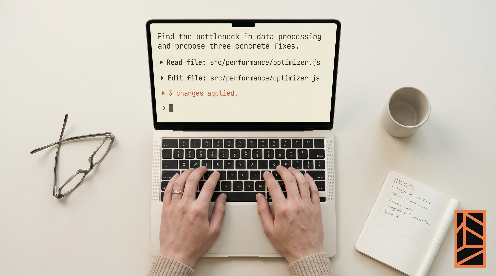

La práctica del personal software
Artículo de Nicolás Bronzina sobre intent coding: la práctica de construir software delegando sintaxis pero conservando dirección. Tres apps personales construidas sin ser programador de base — fitness tracking, radar de señales débiles para Margin Signals, the bare minimum para tareas domésticas — muestran el personal software como categoría emergente: artefactos calibrados para una sola persona, sin pretensión de escalar. La pregunta no es si hay que aprender a programar: es qué puede hacer un equipo cuando prototipar deja de requerir stack técnico y empieza a requerir claridad sobre el problema.
Leer artículo completo